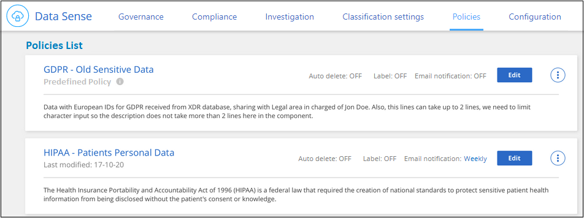
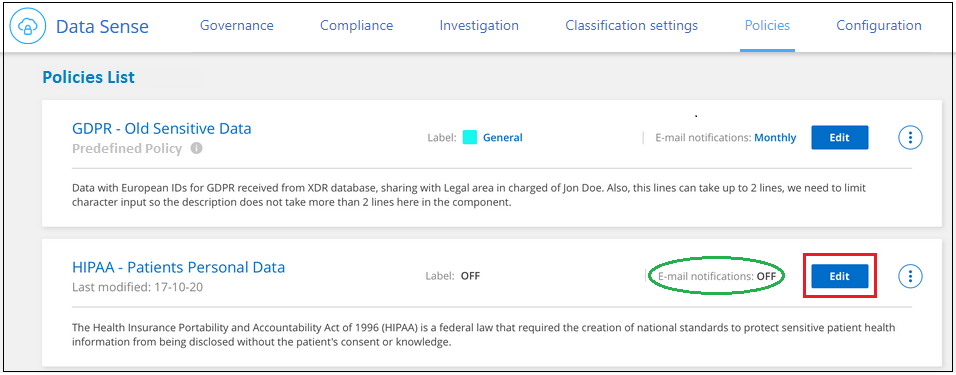
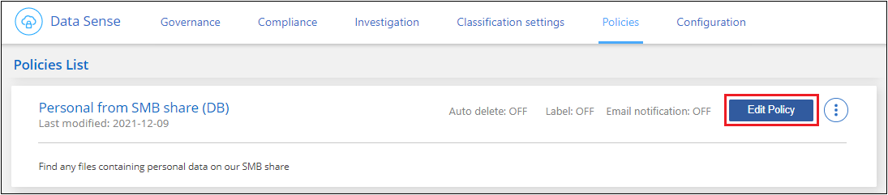

Notas de la versión
Notas de la versión
Asigne políticas a sus datos
 Sugerir cambios
Sugerir cambios
Las directivas son como una lista de favoritos de filtros personalizados que proporcionan resultados de búsqueda en la página de investigación para consultas de cumplimiento solicitadas con frecuencia. La clasificación de BlueXP proporciona un conjunto de políticas predefinidas basadas en solicitudes habituales de los clientes. Puede crear directivas personalizadas que proporcionen resultados para búsquedas específicas de su organización.
Las políticas ofrecen la siguiente funcionalidad:
-
Directivas predefinidas Desde NetApp según solicitudes de usuarios
-
Capacidad de crear sus propias políticas personalizadas
-
Inicie la página de investigación con los resultados de las políticas con un solo clic
-
Envíe alertas por correo electrónico a los usuarios de BlueXP o a cualquier otra dirección de correo electrónico cuando determinadas políticas críticas devuelvan resultados para que pueda obtener notificaciones que protejan sus datos
-
Asigne etiquetas AIP (Protección de información de Azure) automáticamente a todos los archivos que coincidan con los criterios definidos en una directiva
-
Elimine archivos automáticamente (una vez al día) cuando determinadas directivas devuelvan resultados para que pueda proteger sus datos automáticamente
La pestaña Políticas del Panel de cumplimiento enumera todas las políticas predefinidas y personalizadas disponibles en esta instancia de clasificación de BlueXP.

Además, las políticas aparecen en la lista de filtros de la página Investigación.
Ver los resultados de la política en la página Investigación
Para mostrar los resultados de una directiva en la página Investigación, haga clic en  Para una política específica y, a continuación, seleccione investigar resultados.
Para una política específica y, a continuación, seleccione investigar resultados.

Crear políticas personalizadas
Puede crear sus propias directivas personalizadas que proporcionen resultados para búsquedas específicas de su organización. Los resultados se devuelven para todos los archivos y directorios (recursos compartidos y carpetas) que coincidan con los criterios de búsqueda.
Tenga en cuenta que las acciones para eliminar datos y asignar etiquetas AIP basadas en los resultados de la directiva sólo son válidas para archivos. Los directorios que coinciden con los criterios de búsqueda no se pueden eliminar automáticamente ni asignar etiquetas AIP.
-
En la página Investigación de datos, defina la búsqueda seleccionando todos los filtros que desee utilizar. Consulte "Filtrar datos en la página Investigación de datos" para obtener más detalles.
-
Una vez que tenga todas las características de filtro de la forma que desee, haga clic en Crear directiva de esta búsqueda.

-
Asigne un nombre a la directiva y seleccione otras acciones que ésta pueda realizar:
-
Introduzca un nombre y una descripción únicos.
-
Opcionalmente, marque la casilla para eliminar automáticamente los archivos que coincidan con los parámetros de directiva. Más información acerca de eliminación de archivos de origen mediante una directiva.
-
Opcionalmente, marque la casilla si desea que se envíen correos electrónicos de notificación a usuarios de BlueXP en su cuenta y elija el intervalo en el que se envía el correo electrónico. Más información acerca de envío de alertas por correo electrónico basadas en los resultados de la política.
-
Opcionalmente, marque la casilla si desea enviar correos electrónicos de notificación a otros usuarios, introduzca hasta 20 direcciones de correo electrónico y elija el intervalo en el que se envía el correo electrónico.
-
Opcionalmente, active la casilla para asignar automáticamente etiquetas AIP a archivos que coincidan con los parámetros de directiva y seleccione la etiqueta. (Sólo si ya tiene etiquetas AIP integradas. Más información acerca de "Etiquetas AIP".)
-
Haga clic en Crear directiva.

-
La nueva directiva aparece en la ficha Directivas.
Enviar alertas de correo electrónico cuando se encuentren datos no conformes
La clasificación de BlueXP puede enviar alertas por correo electrónico a los usuarios de BlueXP en tu cuenta cuando ciertas políticas críticas devuelvan resultados para que puedas recibir notificaciones que protejan tus datos. Puede optar por enviar las notificaciones por correo electrónico diariamente, semanalmente o mensualmente. También puede optar por enviar alertas de correo electrónico a cualquier otra dirección de correo electrónico - hasta 20 direcciones de correo electrónico - no en su cuenta de BlueXP.
Puede configurar esta configuración al crear la directiva o al editar cualquier directiva.
Siga estos pasos para agregar actualizaciones de correo electrónico a una directiva existente.
-
En la página Lista de directivas, haga clic en Editar para la directiva en la que desea agregar (o cambiar) la configuración de correo electrónico.

-
En la página Edit Policy:
-
Marque la casilla "Enviar por correo electrónico a todos los usuarios de esta cuenta" si desea enviar correos electrónicos de notificación a los usuarios de su cuenta de BlueXP y elija el intervalo en el que se envía el correo electrónico (por ejemplo, todos los días).
-
Marque la casilla "Enviar correo electrónico" si desea enviar correos electrónicos de notificación a usuarios adicionales, seleccione el intervalo en el que se envía el correo electrónico e introduzca hasta 20 direcciones de correo electrónico.

-
-
Haga clic en Guardar directiva y el intervalo en el que se envía el correo electrónico aparecerá en la descripción de la directiva.
El primer correo electrónico se envía ahora si hay algún resultado de la Política, pero sólo si alguno de los archivos cumple los criterios de la Política. No se envía información personal en los correos electrónicos de notificación. El correo electrónico indica que hay archivos que coinciden con los criterios de directiva y proporciona un vínculo a los resultados de la directiva.
Eliminar archivos de origen automáticamente mediante Políticas
Puede crear una directiva personalizada para eliminar los archivos que coincidan con la directiva. Por ejemplo, puede que desee eliminar archivos que contienen información confidencial y que se han detectado por la clasificación de BlueXP en los últimos 30 días.
Sólo los administradores de cuentas pueden crear una directiva para eliminar archivos automáticamente.

|
Todos los archivos que coincidan con la directiva se eliminarán de forma permanente una vez al día. |
-
En la página Investigación de datos, defina la búsqueda seleccionando todos los filtros que desee utilizar. Consulte "Filtrar datos en la página Investigación de datos" para obtener más detalles.
-
Una vez que tenga todas las características de filtro de la forma que desee, haga clic en Crear directiva de esta búsqueda.
-
Asigne un nombre a la directiva y seleccione otras acciones que ésta pueda realizar:
-
Introduzca un nombre y una descripción únicos.
-
Active la casilla para "eliminar automáticamente los archivos que coinciden con esta directiva" y escriba eliminar permanentemente para confirmar que desea que los archivos se eliminen de forma permanente mediante esta directiva.
-
Haga clic en Crear directiva.

-
La nueva directiva aparece en la ficha Directivas. Los archivos que coinciden con la directiva se eliminan una vez al día cuando se ejecuta la directiva.
Puede ver la lista de archivos que se han eliminado en "Panel Estado de acciones".
Asigne etiquetas AIP automáticamente con directivas
Puede asignar una etiqueta AIP a todos los archivos que cumplan los criterios de la directiva. Puede especificar la etiqueta AIP al crear la directiva, o puede agregar la etiqueta al editar cualquier directiva.
Las etiquetas se añaden o actualizan en los archivos continuamente a medida que la clasificación de BlueXP analiza los archivos.
En función de si una etiqueta ya se ha aplicado a un archivo y del nivel de clasificación de la etiqueta, se realizan las siguientes acciones al cambiar una etiqueta:
| Si el archivo… | Realice lo siguiente… |
|---|---|
No tiene etiqueta |
Se agrega la etiqueta |
Tiene una etiqueta de un nivel inferior de clasificación |
Se agrega la etiqueta de nivel superior |
Tiene una etiqueta existente de un nivel superior de clasificación |
Se mantiene la etiqueta de nivel superior |
Se asigna una etiqueta tanto manualmente como por una directiva |
Se agrega la etiqueta de nivel superior |
Se asignan dos etiquetas diferentes mediante dos directivas |
Se agrega la etiqueta de nivel superior |
Siga estos pasos para agregar una etiqueta AIP a una directiva existente.
-
En la página Lista de directivas, haga clic en Editar para la directiva en la que desea agregar (o cambiar) la etiqueta AIP.

-
En la página Editar directiva, active la casilla para habilitar etiquetas automáticas para los archivos que coincidan con los parámetros de directiva y seleccione la etiqueta (por ejemplo, General).

-
Haga clic en Guardar directiva y la etiqueta aparecerá en la descripción de la directiva.
|
|
Si se ha configurado una directiva con una etiqueta, pero la etiqueta se ha eliminado de AIP, el nombre de la etiqueta se desactiva y la etiqueta ya no se asigna. |
Editar políticas
Puede modificar cualquier criterio para una política existente que haya creado previamente. Esto puede resultar especialmente útil si desea cambiar la consulta (los elementos definidos mediante Filtros) para agregar o quitar determinados parámetros.
Tenga en cuenta que para directivas predefinidas, sólo puede modificar si se envían notificaciones de correo electrónico y si se agregan etiquetas AIP. No se pueden cambiar otros valores.
-
En la página Lista de directivas, haga clic en Editar para la directiva que desea cambiar.

-
Si sólo desea cambiar los elementos de esta página (Nombre, Descripción, si se envían notificaciones de correo electrónico y si se agregan etiquetas AIP), realice el cambio y haga clic en Guardar directiva.
Si desea cambiar los filtros de la consulta guardada, haga clic en Editar consulta.

-
En la página Investigación que define esa consulta, edite la consulta agregando, quitando o personalizando los filtros y haga clic en Guardar cambios .

La directiva cambia inmediatamente. Cualquier acción definida para que esa directiva envíe un correo electrónico, agregue etiquetas AIP o elimine archivos tendrá lugar en el siguiente interno.
Eliminar políticas
Puede eliminar cualquier directiva personalizada que haya creado si ya no la necesita. No se puede eliminar ninguna de las directivas predefinidas.
Para eliminar una directiva, haga clic en Para una directiva específica, haga clic en Eliminar directiva y, a continuación, vuelva a hacer clic en Eliminar directiva en el cuadro de diálogo de confirmación.
Lista de directivas predefinidas
La clasificación de BlueXP proporciona las siguientes políticas definidas por el sistema:
| Nombre | Descripción | Lógica |
|---|---|---|
S3: Datos privados expuestos públicamente |
S3 objetos que contienen información personal o confidencial, con acceso público de lectura abierto. |
S3 Public y contiene información personal o confidencial |
PCI DSS: Datos obsoletos durante 30 días |
Archivos con información de tarjeta de crédito, modificado por última vez hace 30 días. |
Contiene tarjeta de crédito y última modificación durante 30 días |
HIPAA: Datos desfasados a lo largo de 30 días |
Archivos que contienen información médica, modificada por última vez hace 30 días. |
Contiene datos de salud (definidos de la misma forma que en el informe HIPAA) Y última modificación durante 30 días |
Datos privados: Obsoletos a lo largo de 7 años |
Archivos que contengan información personal o confidencial, modificado por última vez hace más de 7 años. |
Archivos que contengan información personal o confidencial, modificado por última vez hace más de 7 años |
RGPD: Ciudadanos europeos |
Archivos que contienen más de 5 identificadores de ciudadanos de un país de la UE o tablas de DB que contienen identificadores de ciudadanos de un país de la UE. |
Archivos que contienen más de 5 identificadores de una (una) tablas de ciudadanos o bases de datos de la UE que contienen filas con más del 15% de columnas con identificadores de la UE de un país. (Cualquiera de los identificadores nacionales de los países europeos. No incluye Brasil, California, Estados Unidos SSN, Israel, Sudáfrica) |
CCPA - residentes de California |
Archivos que contienen más de 10 identificadores de licencia de controlador de California o tablas de base de datos con este identificador. |
Archivos que contienen más de 10 identificadores de Licencia de controlador de California O tablas de base de datos que contienen la licencia de controlador de California |
Nombres de sujetos de datos: Alto riesgo |
Archivos con más de 50 nombres de asunto de datos. |
Archivos con más de 50 nombres de asunto de datos |
Direcciones de correo electrónico: Alto riesgo |
Archivos con más de 50 direcciones de correo electrónico o columnas de base de datos con más del 50% de sus filas que contienen direcciones de correo electrónico |
Archivos con más de 50 direcciones de correo electrónico o columnas de base de datos con más del 50% de sus filas que contienen direcciones de correo electrónico |
Datos personales: Alto riesgo |
Archivos con más de 20 identificadores de datos personales o columnas de base de datos con más del 50% de sus filas que contienen identificadores de datos personales. |
Archivos con más de 20 columnas personales o de base de datos con más del 50% de sus filas que contienen personales |
Datos personales confidenciales: Alto riesgo |
Archivos con más de 20 identificadores de datos personales confidenciales, o columnas de base de datos con más del 50% de sus filas que contienen datos personales confidenciales. |
Archivos con más de 20 columnas confidenciales personales o de base de datos con más del 50% de sus filas que contienen personal confidencial |